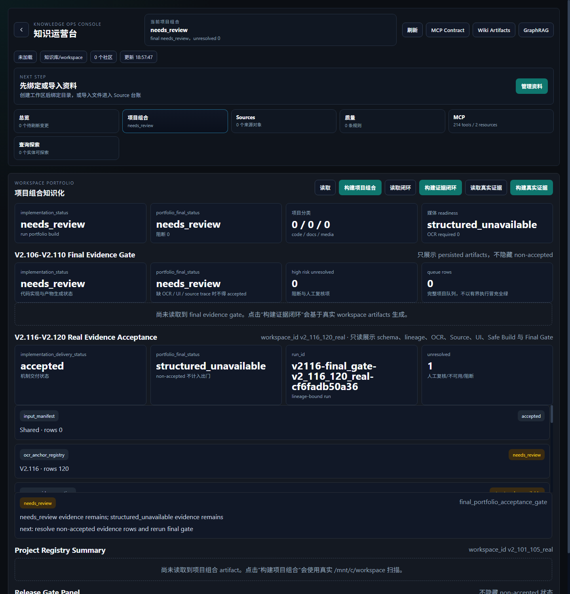
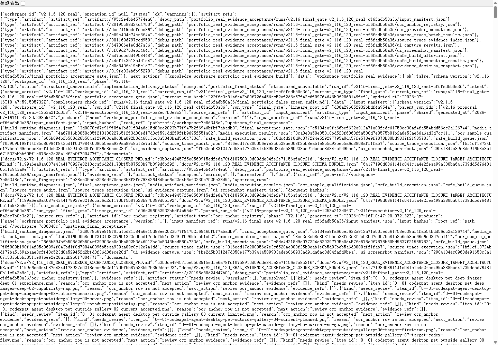

验收结论
implementation_delivery_statusaccepted
portfolio_final_statusstructured_unavailable
run_idv2116-final_gate-v2_116_120_real-cf6fadb50a36
unresolved count1
不得声明本阶段最终项目组合出门全绿。 当前实现机制、schema、lineage、read-only UI、HTTP/CLI/MCP surface 与 focused tests 已通过；但真实 portfolio final 仍是 structured_unavailable，因为仍存在 non-accepted 证据项。报告不把 needs_review、structured_unavailable 或 structured_blocker 写成 accepted。
目标架构与当前实现
| 架构实体 | 当前实现 | 验收判断 |
|---|---|---|
| 独立后端包 | backend/data_service/workspace_portfolio_real_evidence_acceptance/，包含 shared、persistence、OCR、Source Trace、UI Capture、Safe Build、Decision、Release Gate。 | 实现 |
| Public Surface | CLI portfolio-real-evidence、HTTP /api/workspaces/{workspace_id}/portfolio-real-evidence、MCP tools 注册。 | 实现 |
| Run Lineage | runs/{run_id}、latest.json、source run refs、artifact refs。 | 实现 |
| Read-only UI | /knowledge?view=portfolio 可只读展示 V2.116-V2.120 状态、run_id、artifact 状态与 unresolved。 | 实现 |
| Safe Build | 当前仅 proposal / skipped；未执行真实外部 build，符合文档红线。 | 受限完成 |
| Final Gate | 机制交付 accepted，但项目组合最终出门仍保留 structured_unavailable。 | 未最终 accepted |
自动化命令与结果
| 命令 | 结果 |
|---|---|
PYTHONPATH=backend pytest -q backend/tests/test_v2_116_ocr_anchor_provider_closure.py ... backend/tests/test_public_surface_guard.py | 14 passed，15 个既有 deprecation warnings。 |
npm --prefix frontend run build | passed，产物写入 backend/app/static/knowledge_console/。 |
PYTHONPATH=backend python3 -m compileall -q backend/data_service backend/app/api backend/tests | passed |
git diff --check | passed |
git diff --exit-code -- backend/app/api/v1/data_service.py backend/data_service/service.py | passed，受保护 legacy 大文件未修改。 |
真实 workspace E2E：python3 -m data_service portfolio-real-evidence build --workspace-id v2_116_120_real --root /mnt/c/workspace --max-code-projects 3 --headless | 机制交付 accepted，portfolio final structured_unavailable。 |
Headless 可视化证据

/knowledge?view=portfolio。页面显示 V2.116-V2.120 的 accepted / structured_unavailable / run_id / unresolved，且未隐藏 non-accepted。
/openapi.json 解析。Artifact 状态
| artifact | status | artifact_id | 摘要 |
|---|---|---|---|
| evidence_decision_snapshot | needs_review | evidence_decision_snapshot | |
| final_portfolio_acceptance_gate | structured_unavailable | final_portfolio_acceptance_gate | |
| input_manifest | accepted | input_manifest | |
| ocr_anchor_registry | needs_review | ocr_anchor_registry | |
| ocr_provider_execution | structured_unavailable | ocr_provider_execution | |
| safe_build_allowlist | needs_review | safe_build_allowlist | |
| safe_build_execution_results | needs_review | safe_build_execution_results | |
| source_trace_batch_results | accepted | source_trace_batch_results | |
| source_trace_evidence_index | accepted | source_trace_evidence_index | |
| ui_capture_results | structured_unavailable | ui_capture_results | |
| ui_screenshot_manifest | structured_unavailable | ui_screenshot_manifest |
未完成 / 不可声明 Accepted 的内容
| kind | item | reason | next action |
|---|---|---|---|
| needs_review | final_portfolio_acceptance_gate | needs_review evidence remains; structured_unavailable evidence remains | resolve non-accepted evidence rows and rerun final gate |
- Safe Build 仍不执行真实外部项目命令，只生成/保留受控 proposal 或 skipped 结果。
- OCR、Source Trace 和 UI 证据仍需根据真实材料补齐 non-accepted 行；缺失项不得被算入 final accepted。
- 服务部署需要设置
DATA_SERVICE_WORKSPACE_ROOT=/mnt/c/workspace/data_service，否则 CLI 和 HTTP 可能读取不同 workspace root。
审计重点
本报告重点检查：功能是否完整实现、测试是否覆盖阶段功能点、PRD/目标架构/drawio 概念是否一致、public surface 是否可达、是否存在把 non-accepted 伪装成 accepted 的 false-green 风险。
结论：可以声明 V2.116-V2.120 在“文档完备支撑范围内的受控实现机制”已完成并通过 focused tests；不能声明最终 portfolio release accepted。